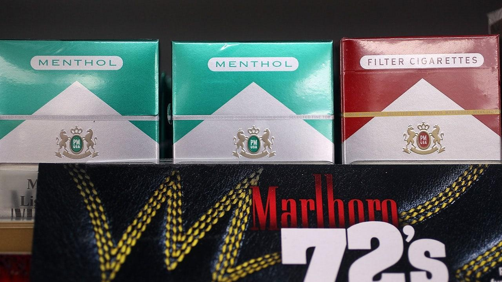

Biden administration delays plan to ban menthol cigarettesThe Biden administration delayed a plan in the works since 2021 to ban menthol cigarettes, the White House confirmed on Friday. "This rule has garnered historic attention and the public comment period has yielded an immense amount of feedback, including from various elements of the civil rights and criminal justice movement," HHS Secretary Xavier Becerra said in a statement shared with FOX Business. "It’s clear that there are still more conversations to have, and that will take significantly more time." Menthol cigarettes are popular among Black and Hispanic smokers, and in whose communities the minty smokes are heavily marketed, according to the Wall Street Journal, citing data from the National Survey on Drug Use and Health. Menthols account for one-third of the cigarettes smoked in the United States. A ban could also benefit the illegal market for cigarettes and lead to racial profiling, some Black leaders worried, including the American Civil Liberties Union Black Caucus members, the newspaper reported. The administration, as part of Biden’s Cancer Moonshot initiative in 2021, proposed banning the cigarettes as an effort to address racial smoking rate disparities and to discourage children and teens from the mint-flavored products. And as the presidential election draws closer, the administration has weighed the health benefits of the ban with a potential backlash from Black voters, the Journal reported. "I am deeply disappointed that the FDA has chosen to abandon its established plan to ban menthol cigarettes," Rep. Robin Kelly, D-Ill., who is the chair of the Congressional Black Caucus Health Braintrust, said. "This is a commonsense plan which could have saved hundreds of thousands of lives." At the state level, California and Massachusetts have already banned menthol cigarette sales. |
 |